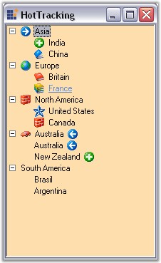

Hot Tracking is a feature available for nodes of the TreeViewAdv control. This gives a hot tracked appearance to the nodes when the mouse cursor is hovering over a corresponding node.
Enabling the HotTracking property to true and when the mouse hovers over any node,
· The forecolor will change to blue and the text will be underlined with blue color, giving the node label a hyperlink appearance.
· In the below image the node "France" is given a link approach by setting the HotTracking property to true and by moving the mouse over the node.

Figure 1142: TreeViewAdv Indicating Hot Tracking